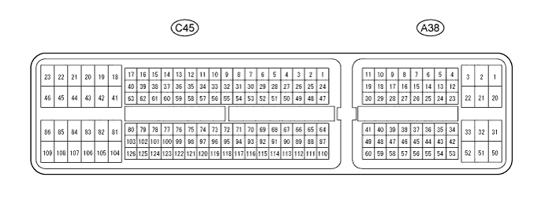
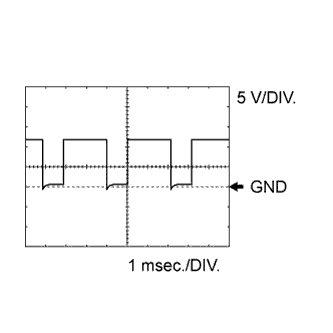
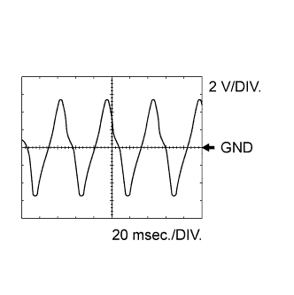
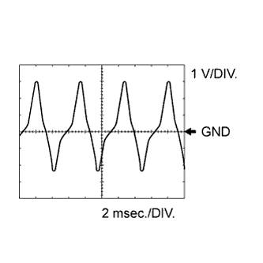
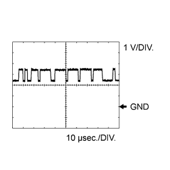
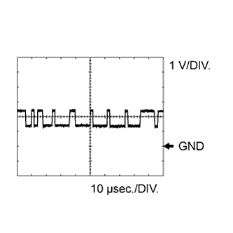

AUTOMATIC TRANSMISSION SYSTEM (for 1GR-FE) > TERMINALS OF ECM |
| CHECK ECM |

| Terminal No. (Symbol) | Wiring Color | Terminal Description | Condition | Specified Condition |
| A38-21 (L4) - C45-81 (E1) | BR-R - BR | Transfer L4 position signal |
| Below 1.5 V |
| A38-21 (L4) - C45-81 (E1) | BR-R - BR | Transfer L4 position signal |
| 11 to 14 V |
| A38-5 (TFN) - C45-81 (E1) | G - BR | Transfer neutral position signal |
| Below 1.5 V |
| A38-5 (TFN) - C45-81 (E1) | G - BR | Transfer neutral position signal |
| 11 to 14 V |
| C45-62 (NSW) - C45-81 (E1) | L - BR | PNP switch signal |
| Below 1.5 V |
| C45-62 (NSW) - C45-81 (E1) | L - BR | PNP switch signal |
| 11 to 14 V |
| C45-24 (P) - C45-81 (E1) | G-B - BR | P shift position switch signal |
| 11 to 14 V |
| C45-24 (P) - C45-81 (E1) | G-B - BR | P shift position switch signal |
| Below 1.5 V |
| C45-25 (R) - C45-81 (E1) | L-R - BR | R shift position switch signal |
| 11 to 14 V |
| C45-25 (R) - C45-81 (E1) | L-R - BR | R shift position switch signal |
| Below 1.5 V |
| C45-27 (N) - C45-81 (E1) | G-W - BR | N shift position switch signal |
| 11 to 14 V |
| C45-27 (N) - C45-81 (E1) | G-W - BR | N shift position switch signal |
| Below 1.5 V |
| C45-26 (D) - C45-81 (E1) | G - BR | D shift position switch signal |
| 11 to 14 V |
| C45-26 (D) - C45-81 (E1) | G - BR | D shift position switch signal |
| Below 1.5 V |
| A38-25 (S) - C45-81 (E1) | W - BR | S shift position switch signal |
| 11 to 14 V |
| A38-25 (S) - C45-81 (E1) | W - BR | S shift position switch signal |
| Below 1 V |
| A38-16 (SFTU) - C45-81 (E1) | Y - BR | Up-shift shift position switch signal |
| 11 to 14 V |
| A38-16 (SFTU) - C45-81 (E1) | Y - BR | Up-shift shift position switch signal |
| Below 1 V |
| A38-51 (SFTD) - C45-81 (E1) | L - BR | Down-shift position switch signal |
| 11 to 14 V |
| A38-51 (SFTD) - C45-81 (E1) | L - BR | Down-shift position switch signal |
| Below 1 V |
| A38-36 (STP) - C45-81 (E1) | R - BR | Stop light switch signal | Brake pedal depressed | 11 to 14 V |
| A38-36 (STP) - C45-81 (E1) | R - BR | Stop light switch signal | Brake pedal released | Below 1.5 V |
| C45-9 (S1) - C45-81 (E1) | R - BR | Shift solenoid valve S1 signal | Engine switch on (IG) | 11 to 14 V |
| C45-9 (S1) - C45-81 (E1) | R - BR | Shift solenoid valve S1 signal | 1st or 2nd gear | 11 to 14 V |
| C45-9 (S1) - C45-81 (E1) | R - BR | Shift solenoid valve S1 signal | 3rd, 4th or 5th gear | Below 1.5 V |
| C45-7 (S2) - C45-81 (E1) | W - BR | Shift solenoid valve S2 signal | Engine switch on (IG) | Below 1.5 V |
| C45-7 (S2) - C45-81 (E1) | W - BR | Shift solenoid valve S2 signal | 2nd or 3rd gear | 11 to 14 V |
| C45-7 (S2) - C45-81 (E1) | W - BR | Shift solenoid valve S2 signal | 1st, 4th or 5th gear | Below 1.5 V |
| C45-8 (SR) - C45-81 (E1) | G - BR | Shift solenoid valve SR signal | Engine switch on (IG) | Below 1.5 V |
| C45-8 (SR) - C45-81 (E1) | G - BR | Shift solenoid valve SR signal | 5th gear | 11 to 14 V |
| C45-8 (SR) - C45-81 (E1) | G - BR | Shift solenoid valve SR signal | 1st gear | Below 1 V |
| C45-16 (SL1+) - C45-17 (SL1-) | Y - L | Shift solenoid valve SL1 signal | Engine idling | Pulse generation (see waveform 1) |
| C45-14 (SL2+) - C45-15 (SL2-) | G-R - L-W | Shift solenoid valve SL2 signal | Engine idling | Pulse generation (see waveform 2) |
| C45-11 (SLT+) - C45-10 (SLT-) | B - G-B | Shift solenoid valve SLT signal | Engine idling | Pulse generation (see waveform 3) |
| C45-12 (SLU+) - C45-13 (SLU-) | L-Y - L-R | Shift solenoid valve SLU signal | 4th (lock-up) gear or 5th (lock-up) gear | Pulse generation (see waveform 4) |
| C45-126 (THO1) - C45-78 (ETHW) | G-Y - BR | No. 1 ATF temperature sensor signal | No. 1 ATF temperature: 115°C (239°F) or higher | Below 1.5 V |
| C45-125 (THO2) - C45-78 (ETHW) | L - BR | No. 2 ATF temperature sensor signal | No. 2 ATF temperature: 115°C (239°F) or higher | Below 1.5 V |
| C45-4 (SP2+) - C45-3 (SP2-) | Y - B | Speed sensor SP2 signal | Vehicle speed 20 km/h (12 mph) | Pulse generation (see waveform 5) |
| C45-6 (NT+) - C45-5 (NT-) | Y - B | Speed sensor NT signal | Engine idling (Shift lever in P or N) | Pulse generation (see waveform 6) |
| A38-41 (CANH) - C45-81 (E1) | P - BR | CAN communication line | Engine switch on (IG) | Pulse generation (see waveform 7) |
| A38-49 (CANL) - C45-81 (E1) | B - BR | CAN communication line | Engine switch on (IG) | Pulse generation (see waveform 8) |
| A38-47 (PWR) - C45-81 (E1) | L-B - BR | Pattern select (PWR) switch signal |
| 11 to 14 V |
| A38-47 (PWR) - C45-81 (E1) | L-B - BR | Pattern select (PWR) switch signal |
| Below 1.5 V |
| A38-17 (SNWI) - C45-81 (E1) | R - BR | Pattern select (2ND) switch signal |
| 11 to 14 V |
| A38-17 (SNWI) - C45-81 (E1) | R - BR | Pattern select (2ND) switch signal |
| Below 1.5 V |
 |
Using an oscilloscope, check waveform 1.
| Terminal No. (Symbol) | Tool Setting | Condition |
| C45-16 (SL1+) - C45-17 (SL1-) | 5 V/DIV., 1 msec./DIV. | Engine idling |
Using an oscilloscope, check waveform 2.
| Terminal No. (Symbol) | Tool Setting | Condition |
| C45-14 (SL2+) - C45-15 (SL2-) | 5 V/DIV., 1 msec./DIV. | Engine idling |
Using an oscilloscope, check waveform 3.
| Terminal No. (Symbol) | Tool Setting | Condition |
| C45-11 (SLT+) - C45-10 (SLT-) | 5 V/DIV., 1 msec./DIV. | Engine idling |
Using an oscilloscope, check waveform 4.
| Terminal No. (Symbol) | Tool Setting | Condition |
| C45-12 (SLU+) - C45-13 (SLU-) | 5 V/DIV., 1 msec./DIV. | 5th (lock-up) |
 |
Using an oscilloscope, check waveform 5.
| Terminal No. (Symbol) | Tool Setting | Condition |
| C45-4 (SP2+) - C45-3 (SP2-) | 2 V/DIV., 20 msec./DIV. | Vehicle speed 20 km/h (12 mph) |
 |
Using an oscilloscope, check waveform 6.
| Terminal No. (Symbol) | Tool Setting | Condition |
| C45-6 (NT+) - C45-5 (NT-) | 1 V/DIV., 2 msec./DIV. | Engine idling (Shift lever in P or N) |
 |
Using an oscilloscope, check waveform 7.
| Terminal No. (Symbol) | Tool Setting | Condition |
| A38-41 (CANH) - C45-81 (E1) | 1 V/DIV., 10 μsec./DIV. | Engine switch on (IG) |
 |
Using an oscilloscope, check waveform 8.
| Terminal No. (Symbol) | Tool Setting | Condition |
| A38-49 (CANL) - C45-81 (E1) | 1 V/DIV., 10 μsec./DIV. | Engine switch on (IG) |